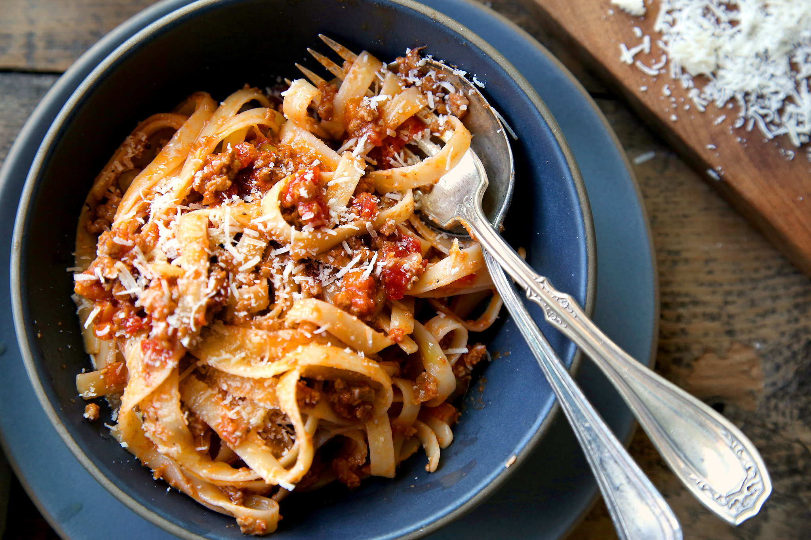

Recipes Beef Sandwich

I’m sharing today this pasta bolognese recipe inspired by the traditional recipe with some healthier swaps.
Ingredients
- Whole Plum Tomatoes
- Ground Beef
- Olive oil
- Salt and Pepper
- Garlic and Onion
Steps
- Saute garlic and onion – about 3 minutes;
- Brown the beef – about 2 minutes;
- Add everything else, give it a good stir then simmer for 20 minutes minimum